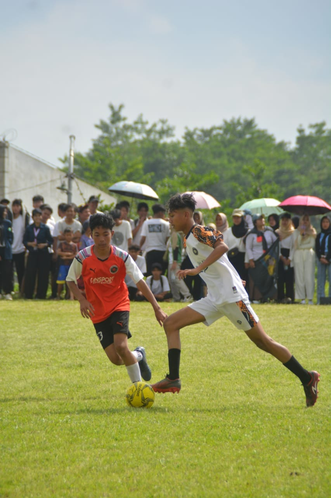
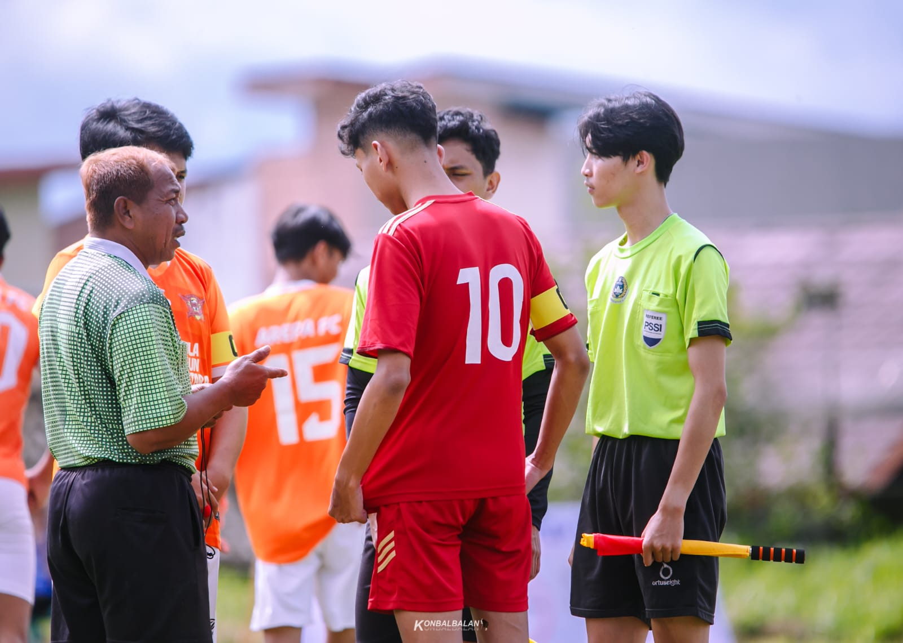
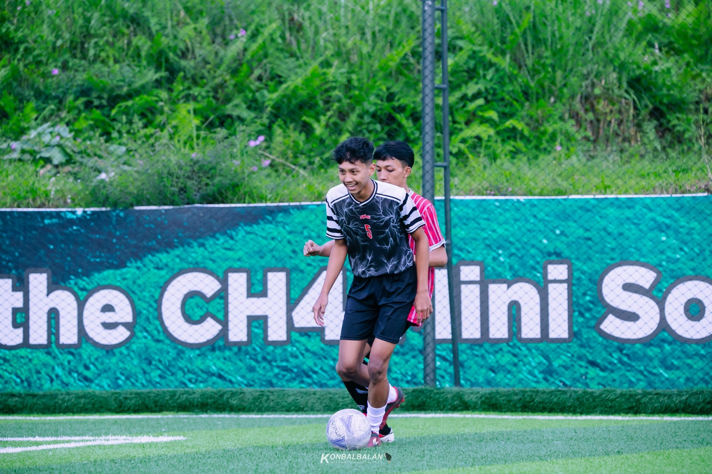
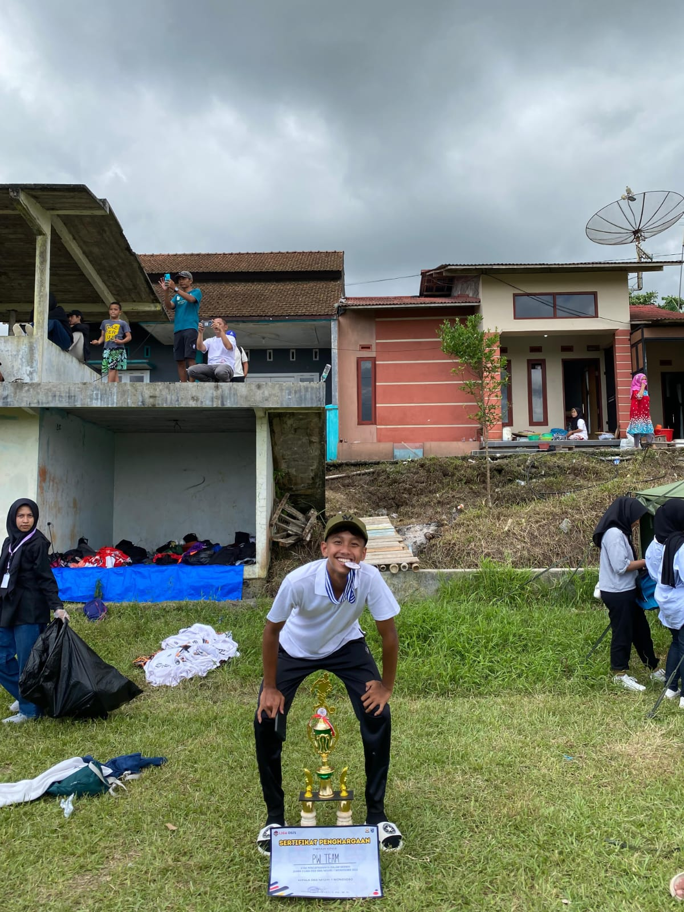

MA
Muhammad Azriel Khoirurrozaq
Manajemen Informasi Komunikasi - STMM
👋 Selamat Datang di Ruang Digital Saya!
Halo! Senang bisa menyambutmu di sini. Halaman ini merangkum rekam jejak digital, hobi, serta perjalanan saya yang paling berkesan dalam dunia olahraga dan akademik.
🎯 Hobi & Minat
- Olahraga: Sepak bola, futsal, bola voli, dan bersepeda.
- Musik: Mendengarkan berbagai genre lagu mengikuti suasana hati.
- Eksplorasi dunia digital, media, dan sistem informasi.
⚽ Galeri Dokumentasi

Saat perlombaan Liga OSIS SMAN 1 Wonosobo

Saat mewakili SMAN 1 Wonosobo di pertandingan Liga Antar Sekolah

Saat sparing dengan SMA Wonosobo yang lain

Foto penghargaan saat mewakili SMAN 1 Wonosobo di Liga Antar Sekolah
👤 Tentang Saya
Lahir di Wonosobo, 10 November 2006. Memiliki postur tinggi badan 177 cm dan berat badan 62 kg. Saya adalah seseorang yang sangat menggemari sepak bola internasional, terutama pendukung setianya Real Madrid. Hari-hari saya sering ditemani alunan musik yang diputar sesuai *mood*.
Fun fact: Waktu SMA dulu saya mengambil kelas peminatan yang berfokus pada bidang teknik, tapi sekarang justru berlabuh di STMM mengambil prodi Manajemen Informasi Komunikasi—perjalanan lintas bidang yang cukup seru dan jauh dari bayangan awal!
📜 Riwayat & Pengalaman
- Pendidikan:
- MI MA'ARIF KLIWONAN
- SMP N 2 WONOSOBO
- SMA N 1 WONOSOBO
- Organisasi: Pernah aktif mengikuti kepanitiaan acara Classic yang diadakan oleh OSIS SMAN 1 Wonosobo.
- Non-Akademik: Aktif mewakili sekolah dalam berbagai kegiatan serta perlombaan futsal, sepak bola, dan bola voli.
📬 Kontak & Media Sosial